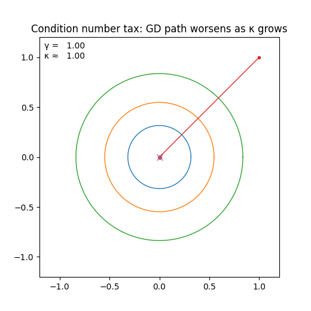
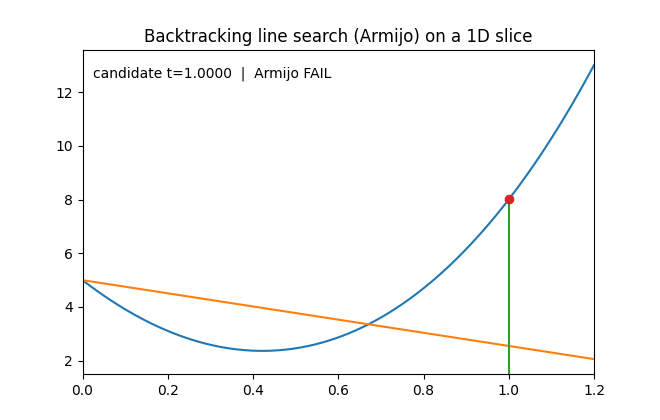
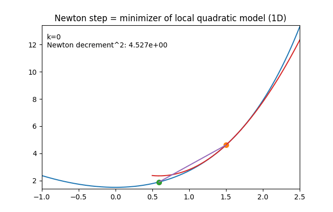

Overview: A rigorous zero‑to‑hero analysis of descent methods for unconstrained convex optimization. Covers gradient descent, steepest descent, and Newton's method with full convergence proofs, including strong convexity implications and self‑concordance.
After this lecture, you will have a deep, step-by-step understanding of the mechanics of unconstrained optimization. We will break down complex theorems into simple building blocks.
Rigorous Convergence Analysis: You will learn not just that gradient descent converges, but exactly how fast and why. We will use Taylor's theorem to derive precise error bounds, showing mathematically that the error $f(x_k) - p^\star$ shrinks by a predictable fraction at every step.
Geometry of Optimization: We will move beyond algebraic formulas to visual intuition. You will learn how the "shape" of the function—specifically the condition number $\kappa$ (how stretched out the elliptical level sets are)—dictates the speed of convergence. We will see why "skinny" valleys cause gradient descent to zig-zag painfully.
The Role of Norms in Steepest Descent: We will discover that "steepest" is a relative term. Depending on whether you measure distance with a ruler (Euclidean norm), a Manhattan grid ($\ell_1$ norm), or a custom gauge (Quadratic norm), the "steepest" direction changes completely. This unifies Gradient Descent, Coordinate Descent, and Newton's Method under one umbrella.
Newton's Method Demystified: We will provide three distinct interpretations of Newton's method: as minimizing a quadratic approximation, as steepest descent in a curvature-adjusted norm, and as an affine-invariant operation. You will understand the "two-phase" convergence: a linear "damped" phase followed by an explosive "quadratic" phase where the number of correct digits doubles at every step.
Practical Implementation: We will bridge the gap between theory and code. You will see how to implement these algorithms in Python, handle practical issues like line search (step size selection), and benchmark them on real problems like Analytic Centering.
Key Concepts
0. Notation and the "Model"
We study the unconstrained optimization problem:
$$ p^\star = \inf_{x\in \mathrm{dom}\,f} f(x) \tag{9.1} $$
Here, we are looking for a vector $x$ that minimizes the scalar function $f(x)$. "Unconstrained" means we are not solving $Ax=b$ or $f_i(x) \le 0$ explicitly. However, implicit constraints exist because the function is only defined on its domain, $\mathrm{dom}\,f$.
To analyze algorithms rigorously, we make specific assumptions about the function $f$. These are not just bureaucratic details; they are the mathematical foundation that allows us to prove convergence. If any of these assumptions fail, the algorithms might oscillate, get stuck, or diverge.
Assumption 1: Convexity. $f$ is convex on $\mathrm{dom}\,f$.
Meaning: The domain is a convex set (no holes, straight line between any two points stays inside). The function curves "upward" like a bowl.
Why it's critical: Convexity guarantees that any local minimum is a global minimum. We don't have to worry about getting stuck in a shallow "pothole" while a deeper valley exists elsewhere.
The Gradient $\nabla f(x) \in \mathbb{R}^n$ exists and is continuous. This vector points in the direction of steepest ascent. We use it to find the direction to move.
The Hessian $\nabla^2 f(x) \in \mathbb{R}^{n \times n}$ exists and is continuous. This matrix describes the local curvature. We use it to measure how "curved" the bowl is, which determines the step size.
Assumption 3: Open Domain. $\mathrm{dom}\,f$ is an open set.
Meaning: The set does not include its boundary. For example, $(0, \infty)$ is open; $[0, \infty)$ is not.
Why it's critical: For any point $x$ in an open domain, there is a tiny ball around $x$ that is entirely contained within the domain. This ensures that we can always take a step $\epsilon$ in any direction without "falling off the edge" of the feasible set. Without this, standard derivatives (which rely on limits approaching from all directions) would not be well-defined at the boundary.
Assumption 4: Solvability. The problem is solvable.
Meaning: The optimal value $p^\star = \min_x f(x)$ is finite (not $-\infty$) and is actually achieved at some point $x^\star$.
Counter-example: $f(x) = e^{-x}$ is bounded below by 0, but never reaches it ($x \to \infty$). Our theory assumes an optimal point $x^\star$ explicitly exists so we can measure the distance $\|x - x^\star\|$.
Important Subtlety on Domains & Extended Values: Strictly speaking, if $f$ is a map $\mathbb{R}^n \to \mathbb{R}$, its domain is the entire space. In convex analysis, we essentially work with extended-valued functions $f: \mathbb{R}^n \to \mathbb{R} \cup \{+\infty\}$, where the effective domain is $\mathrm{dom}\,f = \{x \mid f(x) < +\infty\}$.
For example, the logarithmic barrier $f(x) = -\sum \log(x_i)$ is formally defined as $+\infty$ if any $x_i \le 0$. Its effective domain is the open positive orthant $\mathbb{R}^n_{++}$. Twice differentiability forces us to restrict our attention to this open set where derivatives are well-defined. Our algorithms must stay strictly inside this open set; stepping onto the boundary (where $f=+\infty$) is forbidden.
The "Container" Set $S$:
One of the most important moves in the analysis is "localizing" all claims to the initial sublevel set:
$$ S=\{x\in\mathrm{dom}\,f \mid f(x)\le f(x^{(0)})\} \tag{9.3} $$
Why is this set so critical?
The Trap (Descent Property): Most methods in Chapter 9 are descent methods, enforcing $f(x^{(k+1)}) \le f(x^{(k)})$. Inductively, $f(x^{(k)}) \le f(x^{(0)})$, so every iterate $x^{(k)}$ lives inside $S$. Any property we assume "for all $x \in S$" automatically applies to every point the algorithm visits.
Closedness & Compactness: We typically assume $f$ is a closed function (meaning its epigraph is closed, or equivalently, its sublevel sets are closed).
If we assume Strong Convexity (Section 3), $S$ becomes bounded.
A closed and bounded set in $\mathbb{R}^n$ is compact.
Compactness is the magic property that guarantees continuous functions (like $\lambda_{\max}(\nabla^2 f(x))$) attain their maximum and minimum. This allows us to rigorously define constants $m$ and $M$ such that $mI \preceq \nabla^2 f(x) \preceq MI$ everywhere in $S$.
1. The Core Equivalence (Optimality Conditions)
The unconstrained problem is simply:
$$ \min_x f(x) \tag{9.1} $$
1.1 Why Convexity + Differentiability Makes Optimality Global
One of the most powerful theorems in optimization states that for convex functions, the condition $\nabla f(x) = 0$ is necessary and sufficient for a point to be a global minimizer.
$$ \nabla f(x^\star)=0 \iff x^\star \text{ is a global minimizer} \tag{9.2} $$
Contrast with Non-Convex Calculus: In standard calculus, $\nabla f(x)=0$ only tells you that you are at a stationary point. You could be at:
A local minimum (bottom of a small valley).
A local maximum (top of a hill).
A saddle point (like the center of a Pringles chip).
However, convexity upgrades "stationary point" to "global minimizer." There are no local traps. If the slope is zero, you are at the absolute bottom.
This relies on the first-order characterization of convexity:
$$ f(y) \ge f(x) + \nabla f(x)^T (y-x) \qquad (\star) $$
Geometrically, this inequality says that the first-order Taylor approximation (the tangent hyperplane) is a global underestimator of the function. The graph of the function lies entirely above its tangent plane at any point $x$.
Detailed Proof of the Global Underestimator Property $(\star)$
We start from the definition of convexity and derive the gradient inequality.
Definition of Convexity: By definition, for any two points $x, y$ and any $t \in [0,1]$, the function segment lies below the chord connecting them:
$$ f(x+t(y-x)) \le (1-t)f(x)+t f(y) $$
Isolate $f(y)$: We want to bound $f(y)$. Let's rearrange the inequality.
$$ f(x+t(y-x)) \le f(x) - tf(x) + tf(y) $$
$$ f(x+t(y-x)) - f(x) \le t(f(y)-f(x)) $$
Form Difference Quotient: Divide both sides by $t$ (assuming $t > 0$):
$$ \frac{f(x+t(y-x))-f(x)}{t} \le f(y)-f(x) $$
Take the Limit ($t \to 0$): Now, let $t$ approach 0 from the positive side ($t \downarrow 0$).
The Left Hand Side is exactly the definition of the directional derivative of $f$ at $x$ in the direction $(y-x)$.
$$ \lim_{t \to 0} \frac{f(x+t(y-x))-f(x)}{t} = \nabla f(x)^T(y-x) $$
Conclusion: Substituting the limit back into the inequality:
$$ \nabla f(x)^T(y-x) \le f(y) - f(x) $$
Rearranging gives the result:
$$ f(y) \ge f(x) + \nabla f(x)^T (y-x) $$
Proof of Equivalence ($\nabla f(x^\star)=0 \iff \text{Global Min}$):
Sufficiency ($\nabla f(x^\star)=0 \Rightarrow$ Min): Suppose we found a point $x^\star$ where the gradient is zero. Does this guarantee it's the best point?
Yes. We simply plug $\nabla f(x^\star) = 0$ into the convexity inequality $(\star)$. For any other point $y$ in the domain:
$$ f(y) \ge f(x^\star) + \underbrace{\nabla f(x^\star)^T}_{0} (y-x^\star) $$
$$ f(y) \ge f(x^\star) $$
Since $f(y)$ is always greater than or equal to $f(x^\star)$, $x^\star$ must be a global minimizer.
Necessity (Min $\Rightarrow \nabla f(x^\star)=0$): Conversely, if $x^\star$ is a minimizer, must the gradient be zero?
We prove this by contradiction. Assume $x^\star$ is a local minimizer but $\nabla f(x^\star) \neq 0$.
Open Domain Assumption: Since $\mathrm{dom}\,f$ is open, we can move a small distance in any direction without hitting a wall.
Choose Descent Direction: Let $v = -\nabla f(x^\star)$. This is the direction of steepest descent.
Single-Variable Function: Let's restrict the function to the line passing through $x^\star$ in direction $v$. Define $\phi(t) = f(x^\star + tv)$.
Since $x^\star$ (where $t=0$) is a minimizer, $\phi(t)$ must have a local minimum at $t=0$.
First Derivative Test: Calculus tells us that for $t=0$ to be a minimum, the derivative $\phi'(0)$ must be 0.
Let's compute $\phi'(0)$ using the chain rule:
$$ \phi'(0) = \nabla f(x^\star)^T v = \nabla f(x^\star)^T (-\nabla f(x^\star)) = -\|\nabla f(x^\star)\|_2^2 $$
Contradiction: We assumed $\nabla f(x^\star) \neq 0$, so the squared norm $\|\nabla f(x^\star)\|_2^2$ is strictly positive.
Thus, $\phi'(0) < 0$.
Since the derivative is negative, the function is decreasing at $t=0$. This means that for a tiny step $t > 0$, $\phi(t) < \phi(0)$, or equivalently $f(x^\star + tv) < f(x^\star)$.
Conclusion: We found a point with a lower function value. This contradicts the assumption that $x^\star$ is a minimizer. Therefore, the gradient $\nabla f(x^\star)$ must be 0.
2. Motivating Examples
Before diving into the proofs, let's look at the canonical problems we are trying to solve. These examples will serve as our testbed for algorithms.
2.1 Quadratic Minimization
The most basic convex optimization problem is the unconstrained quadratic program:
$$ \min_x \ f(x) = \frac12 x^T P x + q^T x + r,\qquad P\in S^n_+ \tag{9.4} $$
where $P$ is symmetric positive semidefinite ($P \succeq 0$). This is the "Hello World" of optimization.
Step-by-Step Derivation of the Gradient $\nabla f(x)$:
1. Linear Term: The gradient of $q^T x = \sum q_i x_i$ is simply the vector $q$.
2. Quadratic Term: Let's compute $\nabla (\frac{1}{2} x^T P x)$. It helps to write it in scalar sum notation:
$$ \phi(x) = \frac{1}{2} \sum_{i=1}^n \sum_{j=1}^n P_{ij} x_i x_j $$
Now take the partial derivative with respect to a specific variable $x_k$. We need to find all terms in the sum that contain $x_k$.
- Terms where $i=k$ and $j \neq k$: $\frac{1}{2} \sum_{j \neq k} P_{kj} x_k x_j$. Derivative is $\frac{1}{2} \sum_{j \neq k} P_{kj} x_j$.
- Terms where $j=k$ and $i \neq k$: $\frac{1}{2} \sum_{i \neq k} P_{ik} x_i x_k$. Derivative is $\frac{1}{2} \sum_{i \neq k} P_{ik} x_i$.
- Term where $i=k$ and $j=k$: $\frac{1}{2} P_{kk} x_k^2$. Derivative is $P_{kk} x_k$.
Adding them up:
$$ \frac{\partial \phi}{\partial x_k} = \frac{1}{2} \sum_{j} P_{kj} x_j + \frac{1}{2} \sum_{i} P_{ik} x_i $$
Since $P$ is symmetric ($P_{ij} = P_{ji}$), the indices $i$ and $j$ play the same role. Both sums are effectively the same: the dot product of the $k$-th row of $P$ with $x$.
$$ \frac{\partial \phi}{\partial x_k} = \sum_{j} P_{kj} x_j = (Px)_k $$
Thus, the vector gradient is $\nabla f(x) = Px + q$.
Setting the gradient to zero gives the linear system:
$$ Px^\star = -q $$
Case 1: $P \succ 0$ (Positive Definite). The matrix $P$ is invertible (all eigenvalues $> 0$). There is a unique global minimizer: $x^\star = -P^{-1}q$. The level sets are ellipsoids, and the function looks like a perfect bowl.
Case 2: $P \succeq 0$ but Singular. The matrix $P$ has a zero eigenvalue, meaning the bowl has a "flat" valley floor (like a trough).
If $-q \in \mathrm{range}(P)$, there are infinitely many solutions (a linear subspace of solutions lying in the valley).
If $-q \notin \mathrm{range}(P)$, the system is inconsistent. The function is unbounded below. It slopes downward along the flat valley forever (like a tilted trough), so $p^\star = -\infty$.
2.2 Least Squares
$$ \min_x \|Ax-b\|_2^2 $$
This is the foundation of regression and data fitting. We can expand the squared norm to reveal it is just a specific type of quadratic function:
$$ f(x) = (Ax-b)^T (Ax-b) = x^T A^T A x - 2b^T A x + b^T b $$
Comparing this to the standard form in 2.1:
The optimality condition $\nabla f(x) = 0$ becomes the famous Normal Equations:
$$ 2A^T A x - 2A^T b = 0 \implies A^T A x = A^T b $$
2.3 Log-Sum-Exp (Softmax)
This function approximates the "max" function ($\max_i (a_i^T x + b_i)$) but is smooth and convex:
$$ f(x)=\log\Big(\sum_{i=1}^m e^{a_i^T x+b_i}\Big) $$
This is crucial in Machine Learning (e.g., Logistic Regression, Neural Networks) where it acts as a loss function.
Gradient Interpretation:
Let $z_i = a_i^T x + b_i$. By the chain rule:
$$ \nabla f(x) = \frac{1}{\sum_j e^{z_j}} \sum_{i=1}^m e^{z_i} a_i = \sum_{i=1}^m \left( \frac{e^{z_i}}{\sum_j e^{z_j}} \right) a_i $$
We define the weights $w_i(x)$ as the Softmax function probabilities:
$$ w_i(x) = \frac{e^{z_i}}{\sum_j e^{z_j}} $$
So, $\nabla f(x) = \sum_{i=1}^m w_i(x) a_i$.
Intuition: The gradient is a convex combination (weighted average) of the direction vectors $a_i$.
If one term $k$ is much larger than the others, $e^{z_k}$ dominates the sum. Then $w_k \approx 1$ and other weights $\approx 0$.
In this case, $\nabla f(x) \approx a_k$. This matches the gradient of the hard $\max$ function $\max_i(z_i)$, which would simply be the gradient of the "active" term.
2.4 Analytic Centers (Logarithmic Barriers)
$$ f(x) = -\sum_{i=1}^m \log(b_i - a_i^T x) $$
defined on the polyhedron $\mathcal{P} = \{x \mid a_i^T x < b_i \forall i\}$.
Intuition:
Each term $-\log(b_i - a_i^T x)$ acts as a repulsive force field.
If $x$ is far from the wall $a_i^T x = b_i$, the term is small.
As $x$ approaches the wall ($a_i^T x \to b_i$), the value explodes to $+\infty$.
Minimizing $f(x)$ finds a point $x^\star$ that is "maximally inside" the set, balancing the repulsion from all walls simultaneously. This point is called the Analytic Center. This concept is the engine behind Interior Point Methods, which solve constrained problems by following a path of analytic centers.
3. Strong Convexity: The Engine of Convergence
To prove that algorithms converge fast, mere convexity is not enough. We need Strong Convexity. This assumption prevents the function from being too "flat."
Formally, there exists a scalar $m>0$ such that:
$$ \nabla^2 f(x)\succeq mI,\qquad \forall x\in S. \tag{9.7} $$
Geometric Meaning:
$\nabla^2 f(x) \succeq mI$ means that all eigenvalues of the Hessian are $\ge m$.
The function is "at least as curved as a quadratic bowl with curvature $m$."
If you slice the graph in any direction, the resulting 1D curve is bounded below by a parabola $y = \frac{m}{2}x^2$.
This strictly forbids flat regions (where curvature is 0). It ensures that as we move away from the minimum, the function value rises sharply.
3.1 From Taylor’s Theorem to the Quadratic Lower Bound
Let's derive the most important consequence of strong convexity. It states that the function lies above a paraboloid.
Consider two points $x$ (our current location) and $y$ (any other point). Taylor’s theorem states:
$$ f(y) = f(x) + \nabla f(x)^T(y-x) + \underbrace{\frac{1}{2} (y-x)^T \nabla^2 f(z) (y-x)}_{\text{Second Order Term}} $$
where $z$ is some point on the line segment between $x$ and $y$.
Applying the Assumption:
Since we assume $\nabla^2 f(z) \succeq mI$, we know that for any vector $v$, $v^T \nabla^2 f(z) v \ge m \|v\|_2^2$.
Setting $v = y-x$:
$$ (y-x)^T \nabla^2 f(z) (y-x) \ge m \|y-x\|_2^2 $$
Substituting this back into the Taylor expansion gives the Quadratic Lower Bound:
$$ f(y) \ge f(x) + \nabla f(x)^T(y-x) + \frac{m}{2} \|y-x\|_2^2 \tag{9.8} $$
Comparison:
Convexity ($m=0$): $f(y) \ge f(x) + \nabla f(x)^T(y-x)$. The graph is above the flat tangent plane.
Strong Convexity ($m>0$): The graph is above a specific upward-curving paraboloid touching at $x$.
3.2 Bounding Suboptimality and Distance to Optimizer
The quadratic lower bound is a powerful tool. It allows us to relate the size of the gradient $\|\nabla f(x)\|$ to how close we are to the solution.
1. Suboptimality Bound ($f(x) - p^\star$):
Fix $x$. The inequality (9.8) holds for all $y$.
$$ f(y) \ge \underbrace{f(x) + \nabla f(x)^T(y-x) + \frac{m}{2}\|y-x\|^2}_{\text{Let's call this RHS } g(y)} $$
Since $f(y) \ge g(y)$, the minimum of $f$ must be greater than the minimum of $g$:
$$ p^\star = \min_y f(y) \ge \min_y g(y) $$
$g(y)$ is a simple quadratic function of $y$. We can find its minimum easily by setting its gradient to zero:
$$ \nabla g(y) = \nabla f(x) + m(y-x) = 0 \implies \tilde{y} = x - \frac{1}{m}\nabla f(x) $$
Plugging this optimal $\tilde{y}$ back into $g(y)$:
$$ \min_y g(y) = g(\tilde{y}) = f(x) + \nabla f(x)^T \left(-\frac{1}{m}\nabla f(x)\right) + \frac{m}{2} \left\|-\frac{1}{m}\nabla f(x)\right\|^2 $$
$$ = f(x) - \frac{1}{m}\|\nabla f(x)\|^2 + \frac{1}{2m}\|\nabla f(x)\|^2 $$
$$ = f(x) - \frac{1}{2m}\|\nabla f(x)\|^2 $$
So we have:
$$ p^\star \ge f(x) - \frac{1}{2m}\|\nabla f(x)\|_2^2 $$
Rearranging this gives us a bound on how suboptimal our current point $x$ is:
$$ f(x)-p^\star \le \frac{1}{2m}\|\nabla f(x)\|_2^2 \tag{9.9} $$
Why this is useful: We can't see $p^\star$, but we can calculate $\|\nabla f(x)\|$. This bound tells us strictly: "If your gradient is small, you are guaranteed to be close to the optimal value."
2. Distance to Optimizer ($\|x - x^\star\|$):
We can also bound the distance in the domain.
Apply the master inequality (9.8) specifically at $y=x^\star$:
$$ p^\star \ge f(x)+\nabla f(x)^T(x^\star-x)+\frac{m}{2}\|x^\star-x\|^2 $$
Since $p^\star \le f(x)$ (obviously), we have:
$$ 0 \ge \nabla f(x)^T(x^\star-x)+\frac{m}{2}\|x^\star-x\|^2 $$
Move the dot product to the other side:
$$ -\nabla f(x)^T(x^\star-x) \ge \frac{m}{2}\|x^\star-x\|^2 $$
Use the Cauchy-Schwarz inequality on the left ($|a^Tb| \le \|a\|\|b\|$):
$$ \|\nabla f(x)\|_2 \|x^\star-x\|_2 \ge \frac{m}{2}\|x^\star-x\|_2^2 $$
Divide both sides by $\|x^\star - x\|_2$ (assuming we aren't already at the optimum):
$$ \|\nabla f(x)\|_2 \ge \frac{m}{2}\|x^\star-x\|_2 $$
Or:
$$ \|x-x^\star\|_2 \le \frac{2}{m}\|\nabla f(x)\|_2 \tag{9.11} $$
This implies the optimizer $x^\star$ is unique. (If there were two minima, the gradient would be zero at both, implying distance is zero).
4. Smoothness: The Guarantee of Descent
Strong Convexity gave us a lower bound (paraboloid below). To ensure our algorithms don't oscillate wildly, we also need an upper bound on curvature.
Since $f$ is twice continuously differentiable and we are working on a closed and bounded set $S$, the maximum eigenvalue of the Hessian must be bounded above by some constant $M$:
$$ \nabla^2 f(x)\preceq MI,\qquad \forall x\in S \tag{9.12} $$
This property is called M-smoothness (or Lipschitz continuity of the gradient with constant $M$).
Interpretation: The function is "no more curved than a quadratic bowl with curvature $M$." It doesn't have arbitrarily sharp kinks.
4.1 Quadratic Upper Bound
Using Taylor's theorem exactly as before, but substituting the upper bound $\nabla^2 f(z) \preceq MI$:
$$ f(y) \le f(x) + \nabla f(x)^T(y-x) + \frac{M}{2}\|y-x\|_2^2 \tag{9.13} $$
The Sandwich Principle: Combining (9.8) and (9.13), we see that the function $f(y)$ is sandwiched between two quadratic bowls anchored at $x$:
$$ \underbrace{f(x) + \nabla f(x)^T(y-x) + \frac{m}{2}\|y-x\|^2}_{\text{Lower Paraboloid (Blue)}} \le f(y) \le \underbrace{f(x) + \nabla f(x)^T(y-x) + \frac{M}{2}\|y-x\|^2}_{\text{Upper Paraboloid (Red)}} $$
The function lives in the "Goldilocks zone" between these two quadratics.
Implication for Descent: The upper bound guarantees that if we take a small enough step opposite to the gradient, the function value must decrease.
Let's try to minimize the Upper Bound (the Red Paraboloid). The minimum occurs at $y = x - \frac{1}{M}\nabla f(x)$.
Plugging this specific step into the inequality (9.13):
$$ f\left(x - \frac{1}{M}\nabla f(x)\right) \le f(x) + \nabla f(x)^T\left(-\frac{1}{M}\nabla f(x)\right) + \frac{M}{2}\left\|-\frac{1}{M}\nabla f(x)\right\|^2 $$
$$ = f(x) - \frac{1}{M}\|\nabla f(x)\|^2 + \frac{M}{2}\frac{1}{M^2}\|\nabla f(x)\|^2 $$
$$ = f(x) - \frac{1}{M}\|\nabla f(x)\|^2 + \frac{1}{2M}\|\nabla f(x)\|^2 $$
$$ f(x_{\text{next}}) \le f(x) - \frac{1}{2M}\|\nabla f(x)\|^2 \tag{9.14} $$
Conclusion: A single gradient step with size $1/M$ is guaranteed to reduce the function value by at least $\frac{1}{2M}\|\nabla f(x)\|^2$.
Summary of Bounds:
Combining the Upper and Lower bounds allows us to bracket the distance to the optimum:
$$ \frac{1}{2M}\|\nabla f(x)\|^2 \le f(x)-p^\star \le \frac{1}{2m}\|\nabla f(x)\|^2 $$
5. Condition Number of Sublevel Sets
We established that $mI \preceq \nabla^2 f(x) \preceq MI$.
The ratio $\kappa = M/m$ is the condition number bound.
$$ \kappa(\nabla^2 f(x))=\frac{\lambda_{\max}(\nabla^2 f(x))}{\lambda_{\min}(\nabla^2 f(x))}\le \frac{M}{m} $$
This number $\kappa$ is the villain of first-order optimization.
5.1 Geometric Meaning: Width and Eccentricity
The condition number $\kappa$ measures the anisotropy (direction-dependence) of the function's curvature.
Intuitively, the sublevel sets $S_\alpha = \{x \mid f(x) \le \alpha\}$ look like ellipsoids.
If $\kappa \approx 1$, the sublevel sets are spherical. Gradient descent points directly to the center.
If $\kappa$ is large (e.g., 1000), the sublevel sets are long, skinny ellipses (like a cigar).
Formal Definition via Width:
For a convex set $C$, the width in direction $q$ ($W(C,q)$) is the distance between parallel supporting hyperplanes perpendicular to $q$.
The condition number of a set is the ratio of its maximum width squared to its minimum width squared:
$$ \mathrm{cond}(C) = \frac{W_{\max}^2}{W_{\min}^2} $$
Example 9.1: Width of an Ellipsoid. Consider the ellipsoid $\mathcal{E}=\{x\mid (x-x_0)^T A^{-1}(x-x_0)\le 1\}$ with positive definite matrix $A$.
1. Width Calculation: The width in direction $q$ (unit vector) is given by $W(\mathcal{E}, q) = 2\sqrt{q^T A q}$.
2. Extremes: - The maximum width corresponds to the largest eigenvalue of $A$: $W_{\max} = 2\sqrt{\lambda_{\max}(A)}$.
- The minimum width corresponds to the smallest eigenvalue: $W_{\min} = 2\sqrt{\lambda_{\min}(A)}$.
3. Condition Number:
$$ \mathrm{cond}(\mathcal{E}) = \frac{(2\sqrt{\lambda_{\max}})^2}{(2\sqrt{\lambda_{\min}})^2} = \frac{\lambda_{\max}(A)}{\lambda_{\min}(A)} = \kappa(A) $$
Geometrically, if the sublevel sets of our function look like this ellipsoid, then their condition number is bounded by $M/m$.

The Condition Number Tax: As $\kappa = M/m$ grows (ellipses become thinner), gradient descent zig-zags significantly, slowing convergence linearly with $\kappa$.
6. Descent Methods
We are now ready to state the general algorithm. We produce a sequence of points $x^{(k)}$ that moves towards the minimum.
General Descent Algorithm:
def descent_method(f, gradient, x0, tol=1e-6):
x = x0
while True:
# 1. Compute Descent Direction (delta_x)
# For standard gradient descent, this is simply -gradient(x).
# For Newton's method, it is -inv(Hessian) * gradient(x).
delta_x = compute_direction(x)
# 2. Check Stopping Criterion
# A robust check uses the Newton Decrement or the Gradient norm.
# Based on (9.9), if ||grad|| is small, the gap f(x) - p* is small.
if -gradient(x).dot(delta_x) / 2 <= tol:
break
# 3. Line Search (Step Size Selection)
# We need to find a scalar t > 0 such that the function actually decreases.
# f(x + t*delta_x) < f(x)
t = line_search(f, x, delta_x)
# 4. Update
x = x + t * delta_x
return x
The search direction $\Delta x$ must be a descent direction: $\nabla f(x)^T \Delta x < 0$. This ensures that the angle between the step and the gradient is greater than 90 degrees (going "downhill"), so for small enough steps, the function value decreases.
6.1 Exact Line Search: A Rigorous Proof of Linear Convergence
Let's prove mathematically why Gradient Descent works.
Suppose we use Exact Line Search, where we choose the step size $t$ to minimize $f$ exactly along the ray: $t = \text{argmin}_{s \ge 0} f(x + s \Delta x)$.
Proof Goal: Show that the error $\epsilon_k = f(x^{(k)}) - p^\star$ decreases by a constant factor $c < 1$ at every step ($\epsilon_{k+1} \le c \cdot \epsilon_k$).
Step 1: Guaranteed Decrease (using Smoothness).
We don't know the exact optimal $t$, but we know it must be at least as good as any arbitrary guess. Let's test the specific guess $t = 1/M$.
From the smoothness upper bound (9.13), taking a step of size $1/M$ along the direction $d = -\nabla f(x)$ gives:
$$ f(x - \frac{1}{M}\nabla f(x)) \le f(x) + \nabla f(x)^T(-\frac{1}{M}\nabla f(x)) + \frac{M}{2}\left\|-\frac{1}{M}\nabla f(x)\right\|^2 $$
$$ = f(x) - \frac{1}{M}\|\nabla f(x)\|^2 + \frac{1}{2M}\|\nabla f(x)\|^2 $$
$$ = f(x) - \frac{1}{2M}\|\nabla f(x)\|^2 $$
Since the Exact Line Search finds the best $t$, the resulting function value $f(x_{\text{next}})$ must be even lower than this specific guess:
$$ f(x_{\text{next}}) \le f(x - \frac{1}{M}\nabla f(x)) \le f(x) - \frac{1}{2M}\|\nabla f(x)\|^2 $$
Step 2: Relating Gradient to Error (using Strong Convexity).
We need to replace the gradient term $\|\nabla f(x)\|^2$ with the error term $(f(x) - p^\star)$.
Recall the Strong Convexity bound (9.9):
$$ f(x) - p^\star \le \frac{1}{2m}\|\nabla f(x)\|^2 \implies \|\nabla f(x)\|^2 \ge 2m(f(x) - p^\star) $$
Substituting this into our inequality from Step 1:
$$ f(x_{\text{next}}) \le f(x) - \frac{1}{2M} \left( 2m(f(x) - p^\star) \right) $$
$$ f(x_{\text{next}}) \le f(x) - \frac{m}{M}(f(x) - p^\star) $$
Step 3: Conclusion.
Subtract $p^\star$ from both sides to see the evolution of the error:
$$ f(x_{\text{next}}) - p^\star \le (f(x) - p^\star) - \frac{m}{M}(f(x) - p^\star) $$
$$ \epsilon_{k+1} \le \left(1 - \frac{m}{M}\right) \epsilon_k $$
This is Linear Convergence. The error contracts by a fixed factor $c = 1 - m/M < 1$ at every step.
Note: The contraction factor $1 - 1/\kappa$ depends directly on the condition number $\kappa = M/m$.
If $\kappa=1$ (spherical), $c=0$. Error becomes 0 in one step!
If $\kappa=1000$ (ill-conditioned), $c = 0.999$. We only remove 0.1% of the error per step. This explains the "zig-zag" behavior.
6.2 Backtracking (Armijo) Line Search: Proof of Termination and Convergence
Exact minimization is usually too expensive. Instead, we use Backtracking Line Search. It shrinks the step size $t$ until the "Armijo sufficient decrease condition" is met:
$$ f(x+t\Delta x) \le f(x) + \alpha t \nabla f(x)^T \Delta x, \qquad 0 < \alpha < 0.5, \ \ 0 < \beta < 1 $$
We must prove two things: (1) the loop eventually terminates, and (2) the accepted step is "large enough" to guarantee linear convergence.
1. Termination Proof (Why Armijo holds for small $t$):
Let $g = \nabla f(x)$ and $\Delta x = -g$.
From the smoothness bound (9.13) along the ray:
$$ f(x-tg) \le f(x) - t\|g\|^2 + \frac{M t^2}{2}\|g\|^2 $$
We want this to be $\le f(x) - \alpha t \|g\|^2$.
$$ f(x) - t\|g\|^2 + \frac{M t^2}{2}\|g\|^2 \le f(x) - \alpha t \|g\|^2 $$
Subtracting $f(x)$ and dividing by $t\|g\|^2$ (assuming $g \neq 0$):
$$ -1 + \frac{M t}{2} \le -\alpha \implies \frac{M t}{2} \le 1 - \alpha \implies t \le \frac{2(1-\alpha)}{M} $$
Since $\alpha < 0.5$, the RHS is positive. Thus, for any $t \le \frac{2(1-\alpha)}{M}$, the Armijo condition must hold. The backtracking loop (which shrinks $t$ by $\beta$) will eventually produce a $t$ below this threshold.
2. Lower Bound on Accepted Step Size:
Let $t_0 = \frac{2(1-\alpha)}{M}$.
If the initial $t=1$ works, $t \ge 1$.
If we backtrack, the loop stops at the first $t$ such that $t \le t_0$ (approximately). Since the previous step $t/\beta$ was rejected (meaning $t/\beta > t_0$), the accepted $t$ must satisfy $t > \beta t_0$.
Thus, the accepted step is bounded below:
$$ t \ge \min\left(1, \frac{2\beta(1-\alpha)}{M}\right) $$
3. Convergence Rate:
The Armijo condition guarantees a decrease of at least $-\alpha t \|g\|^2$. Using the lower bound on $t$:
$$ f(x^+) - f(x) \le -\alpha \min\left(1, \frac{2\beta(1-\alpha)}{M}\right) \|g\|^2 $$
Combining this with the Strong Convexity property $\|\nabla f(x)\|^2 \ge 2m(f(x)-p^\star)$, we get:
$$ f(x^+) - p^\star \le f(x) - p^\star - C \cdot 2m (f(x) - p^\star) = (1 - 2mC) (f(x) - p^\star) $$
where $C$ is the constant derived above. This proves Linear Convergence for backtracking line search.
def backtracking_line_search(f, x, delta_x, gradient, alpha=0.3, beta=0.8):
t = 1.0
current_f = f(x)
# Calculate the slope of the linear requirement line
# gradient.dot(delta_x) is negative (descent).
# We want a drop of at least alpha * t * slope.
linear_term = alpha * gradient.dot(delta_x)
while f(x + t * delta_x) > current_f + t * linear_term:
t = t * beta # Shrink step
return t

Backtracking reduces step size $t$ until the function value drops below the linear extrapolation (Armijo line).
7. Steepest Descent
"Steepness" is not absolute; it depends on how you measure distance.
Standard gradient descent moves in the direction $-\nabla f(x)$, which is the steepest direction only if distance is measured in the Euclidean norm ($\ell_2$).
Definition: The normalized steepest descent direction $\Delta x_{\mathrm{nsd}}$ solves the problem:
$$ \Delta x_{\mathrm{nsd}} = \text{argmin}_{v} \{ \nabla f(x)^T v \mid \|v\| \le 1 \} $$
In plain English: "Among all steps of length 1, which one reduces the function value the most?"
7.1 The Role of Dual Norms
To solve the minimization problem above, we need the concept of Dual Norms.
Recall that for any norm $\|\cdot\|$, its dual norm $\|\cdot\|_*$ is defined as:
$$ \|z\|_* = \sup \{z^T x \mid \|x\| \le 1\} $$
This definition implies the generalized Cauchy-Schwarz inequality: $|z^T x| \le \|z\|_* \|x\|$.
Since we want to minimize $\nabla f(x)^T v$, we are looking for the vector $v$ that aligns most negatively with the gradient. The minimum value attained is exactly $-\|\nabla f(x)\|_*$.
7.2 Unnormalized Step and Cases
For convenience, we define the unnormalized steepest descent step $\Delta x_{\mathrm{sd}}$ by scaling the normalized direction by the magnitude of the gradient (measured in the dual norm):
$$ \Delta x_{\mathrm{sd}} = \|\nabla f(x)\|_* \Delta x_{\mathrm{nsd}} $$
This ensures that the predicted drop in function value is:
$$ \nabla f(x)^T \Delta x_{\mathrm{sd}} = \|\nabla f(x)\|_* (\nabla f(x)^T \Delta x_{\mathrm{nsd}}) = \|\nabla f(x)\|_* (-\|\nabla f(x)\|_* ) = -\|\nabla f(x)\|_*^2 $$
1. Euclidean Norm ($\ell_2$)
Norm: $\|v\|_2 = \sqrt{v^T v}$. Dual: $\|g\|_2$.
Geometry: The unit ball is a perfect sphere.
Direction: The vector that minimizes $g^T v$ over the sphere is simply opposite to $g$.
$$ \Delta x_{\mathrm{sd}} = -\nabla f(x) $$
Result: Standard Gradient Descent. The gradient is perpendicular to the tangent plane of the level set.
Geometry: The unit ball is an ellipsoid $\{v \mid v^T P v \le 1\}$.
Direction: The direction is skewed by the inverse of $P$.
$$ \Delta x_{\mathrm{sd}} = -P^{-1}\nabla f(x) $$
Result: Preconditioned Gradient Descent. By choosing $P \approx \nabla^2 f(x)$, we align the "metric" with the function's curvature, effectively turning the elongated level sets into circles.
Geometry: The unit ball is a diamond (polytope) with corners on the axes.
Direction: The minimum of a linear function on a diamond occurs at a vertex. Let $i$ be the index where $|(\nabla f)_i|$ is maximal.
$$ \Delta x_{\mathrm{sd}} = -\text{sign}\left( \frac{\partial f}{\partial x_i} \right) e_i $$
Result: Coordinate Descent (Greedy). We only update the single variable with the largest partial derivative.
7.2 Convergence Analysis for Steepest Descent under General Norms
Does changing the norm change the convergence rate? Yes, but it's subtle. The rate is still linear, but the constant depends on how well the norm matches the geometry of the function.
1. Norm Equivalence: Since all norms on $\mathbb{R}^n$ are equivalent, there exist constants $\gamma, \tilde{\gamma} \in (0,1]$ such that:
$$ \|u\| \ge \gamma \|u\|_2 \quad \text{and} \quad \|z\|_* \ge \tilde{\gamma} \|z\|_2 $$
2. Smoothness Bound in General Norm:
The standard smoothness bound uses Euclidean norm. We convert it:
$$ f(x+v) \le f(x) + \nabla f(x)^T v + \frac{M}{2} \|v\|_2^2 \le f(x) + \nabla f(x)^T v + \frac{M}{2\gamma^2} \|v\|^2 $$
3. Decrease Step:
Taking the unnormalized steepest descent step $\Delta x_{\mathrm{sd}}$ with step size $t$:
Plugging this into the bound:
$$ f(x+t\Delta x_{\mathrm{sd}}) \le f(x) - t\|\nabla f\|_*^2 + \frac{M t^2}{2\gamma^2} \|\nabla f\|_*^2 = f(x) - \|\nabla f\|_*^2 \left( t - \frac{M t^2}{2\gamma^2} \right) $$
Optimizing $t$ yields a guaranteed decrease proportional to $\|\nabla f\|_*^2$.
Conclusion: We still get linear convergence $f(x^{(k)}) - p^\star \le c^k (f(x^{(0)}) - p^\star)$. The constant $c$ depends on the condition number $M/m$ and the "norm distortion" constants $\gamma, \tilde{\gamma}$.
Key Takeaway: If we choose a norm (like the quadratic norm defined by the Hessian) where $\gamma \approx 1$ and the condition number is small, convergence is lightning fast. This is the justification for Newton's method.
8. Newton's Method
Newton's method is the gold standard for unconstrained minimization. While Gradient Descent uses only slope (gradient) information, Newton's method uses curvature (Hessian) information to take much smarter, more accurate steps.
$$ \Delta x_{\mathrm{nt}} = -\nabla^2 f(x)^{-1} \nabla f(x) $$
8.1 Three Interpretations
Why is this specific formula the "right" one? There are three powerful ways to view it.
Minimizing the Quadratic Model (Local Approximation): We approximate $f$ near $x$ by its second-order Taylor expansion (a parabola):
$$ \hat{f}(x+v) = f(x) + \nabla f(x)^T v + \frac{1}{2}v^T \nabla^2 f(x) v $$
Instead of just moving "down", we jump directly to the bottom of this bowl.
To find the minimum, set the derivative with respect to $v$ to zero:
$$ \nabla \hat{f}(v) = \nabla f(x) + \nabla^2 f(x) v = 0 \implies v = -\nabla^2 f(x)^{-1} \nabla f(x) $$

Newton's method approximates the function with a quadratic bowl and jumps to its minimum.
Steepest Descent in Hessian Norm (Geometry-Adaptive): Recall that "steepest descent" depends on the norm. If we choose the norm based on the local curvature:
$$ \|v\|_H = \sqrt{v^T \nabla^2 f(x) v} $$
Then the steepest descent direction is exactly the Newton step.
Interpretation: Newton's method resizes the coordinate system at every step to make the function look spherical. It turns long narrow valleys into nice round bowls locally.
Affine Invariance (Coordinate Independence): This is a crucial property for robust software. If we simply rename our variables (e.g., measuring length in meters vs millimeters), Gradient Descent will change its path completely. Newton's Method will not.
Let $x = Ty$ be an affine change of coordinates.
Proof of Affine Invariance:
Let $g(y) = f(Ty)$ be the function in the new coordinates.
1. Gradients: By chain rule, $\nabla g(y) = T^T \nabla f(x)$.
2. Hessians: $\nabla^2 g(y) = T^T \nabla^2 f(x) T$.
3. Newton Step for $g$:
$$ \Delta y_{\mathrm{nt}} = -(\nabla^2 g(y))^{-1} \nabla g(y) = -(T^T \nabla^2 f(x) T)^{-1} (T^T \nabla f(x)) $$
Using the matrix inverse property $(ABC)^{-1} = C^{-1}B^{-1}A^{-1}$:
$$ = -T^{-1} (\nabla^2 f(x))^{-1} (T^{-T} T^T) \nabla f(x) $$
$$ = -T^{-1} (\nabla^2 f(x))^{-1} \nabla f(x) = T^{-1} \Delta x_{\mathrm{nt}} $$
Since $x = Ty$, a displacement of $\Delta y$ corresponds to a physical displacement of $T \Delta y = \Delta x$. The steps correspond perfectly!
Contrast with Gradient Descent: The gradient descent step is $\Delta y = -T^T \nabla f(x)$. This involves $T^T$, not $T^{-1}$. It does not transform correctly.
8.2 The Newton Decrement $\lambda(x)$
We define the Newton Decrement $\lambda(x)$ as:
$$ \lambda(x) = \sqrt{\nabla f(x)^T (\nabla^2 f(x))^{-1} \nabla f(x)} $$
This single number plays a dual role:
Stopping Criterion: It is an affine-invariant measure of how close we are to the solution. Specifically, $\frac{1}{2}\lambda(x)^2$ is exactly the vertical distance between $f(x)$ and the minimum of the quadratic model. If $\lambda(x)^2/2 < 10^{-6}$, we are effectively done.
Directional Derivative: The slope of the function in the Newton direction is $-\lambda(x)^2$.
$$ \nabla f(x)^T \Delta x_{\mathrm{nt}} = -\nabla f(x)^T (\nabla^2 f)^{-1} \nabla f(x) = -\lambda(x)^2 $$
This guarantees it is always a descent direction (unless $\lambda=0$, meaning we are at the optimum).
8.3 Implementation
def newton_step(f, grad, hess, x):
g = grad(x)
H = hess(x)
# Solve linear system H * dx = -g
# Note: Use a solver (like Cholesky), never invert a matrix explicitly!
delta_x = np.linalg.solve(H, -g)
# Compute Newton Decrement for stopping
# lambda^2 = g^T * H^-1 * g = g^T * (-dx)
lambda_sq = -g.dot(delta_x)
return delta_x, lambda_sq
9. Convergence Analysis & Self-Concordance
Newton's method is famous for its speed, but analyzing it reveals a fascinating "two-phase" structure.
9.1 The Two Phases of Newton's Method
Phase 1: Damped Newton (Far from $x^\star$): When we are far from the solution, the quadratic approximation might be poor. The "full" Newton step ($t=1$) might overshoot or even increase the function value.
During this phase, backtracking line search is essential. It chooses a step size $t < 1$ to ensure stability.
The algorithm behaves like a solid descent method with a guaranteed constant decrease in function value at every step.
Phase 2: Quadratic Convergence (Close to $x^\star$): Once we enter the "basin of attraction" (specifically, when the Newton decrement $\lambda(x) < 0.68$ for self-concordant functions), magic happens.
The backtracking line search always selects $t=1$.
The algorithm converges quadratically. This means the number of correct digits doubles at every iteration. (e.g., error goes $10^{-2} \to 10^{-4} \to 10^{-8} \to 10^{-16}$).
Derivation of Quadratic Convergence (Proof Sketch):
Assume the Hessian is Lipschitz continuous ($\|H(y)-H(x)\| \le L\|y-x\|$).
1. Residual Bound: By analyzing the error in the gradient update $\nabla f(x_{k+1})$, one can show:
$$ \|\nabla f(x_{k+1})\|_2 \le \frac{L}{2m^2} \|\nabla f(x_k)\|_2^2 $$
2. Implication: This inequality has the form $u_{k+1} \le C u_k^2$. If $u_k$ is small enough (specifically $< 1/C$), squaring it makes it vanish incredibly fast.
9.2 Self-Concordance: Removing the Unknown Constants
Classical convergence proofs rely on constants like $m$ (strong convexity) and $L$ (Lipschitz Hessian). These constants are often unknown, hard to estimate, and depend on the units of measurement (not affine invariant).
The Solution: Nesterov and Nemirovski introduced Self-Concordance. This is a property that limits how fast the curvature changes relative to the curvature itself.
Definition (1D): A convex function $\phi: \mathbb{R} \to \mathbb{R}$ is self-concordant if:
$$ |\phi'''(x)| \le 2 (\phi''(x))^{3/2} $$
Affine Invariance: If $f$ is self-concordant, then any affine transformation $g(y) = f(Ay+b)$ is also self-concordant.
Why it matters:
Universal Constants: For any self-concordant function, Newton's method is guaranteed to enter the quadratic convergence phase once $\lambda(x) < 0.68$. We don't need to know $m$ or $L$!
Complexity Theory: It allows us to prove that the number of Newton steps required to solve a problem depends only on the structure of the problem (e.g., number of log-barrier terms), not on the data values. This is the foundation of Interior Point Methods.
Examples: Linear and quadratic functions (3rd derivative is 0) are self-concordant. The logarithmic barrier $-\sum \log x_i$ is self-concordant.
9.3 Quasi-Newton Methods (BFGS)
For very large problems ($n > 1000$), storing the Hessian matrix ($n^2$ floats) and solving the linear system ($n^3$ flops) is too expensive.
Quasi-Newton methods aim to replicate the superlinear speed of Newton's method without computing the Hessian explicitly.
The Secant Equation:
We want to build an approximation $B_{k+1} \approx \nabla^2 f(x_{k+1})$ based on the information gained from the last step.
Let $s_k = x_{k+1} - x_k$ (change in position) and $y_k = \nabla f(x_{k+1}) - \nabla f(x_k)$ (change in gradient).
By Taylor's theorem, $\nabla f(x_{k+1}) \approx \nabla f(x_k) + \nabla^2 f(x_{k+1}) (x_{k+1} - x_k)$.
Thus, we require our approximation $B_{k+1}$ to satisfy the Secant Equation:
$$ B_{k+1} s_k = y_k $$
BFGS (Broyden–Fletcher–Goldfarb–Shanno):
This is the most popular update rule. It updates the inverse Hessian approximation $H_k \approx (\nabla^2 f)^{-1}$ directly, which allows us to find the search direction $\Delta x = -H_k \nabla f(x)$ in $O(n^2)$ time.
$$ H_{k+1} = (I - \rho_k s_k y_k^T) H_k (I - \rho_k y_k s_k^T) + \rho_k s_k s_k^T, \quad \text{where } \rho_k = \frac{1}{y_k^T s_k} $$
Cost: $O(n^2)$ per iteration (matrix-vector multiplication).
Convergence: Superlinear (faster than linear, slower than quadratic). It typically finds the solution in very few steps compared to GD.
Memory: L-BFGS (Limited-memory BFGS) stores only the last $m$ pairs of $(s_k, y_k)$ vectors, reducing memory to $O(mn)$, enabling optimization with millions of variables (e.g., Deep Learning).
Interactive Widgets
Below are tools to explore the concepts interactively.
Gradient Descent Visualizer
Visualize the trajectory of gradient descent for a 2D quadratic function.
Steepest Descent Geometry
Visualizing how the norm determines the "steepest" direction. L2 steepest opposes the gradient. L1 steepest snaps to an axis (coordinate descent).
GD vs. Newton Race
Compare the convergence of gradient descent and Newton's method.
Convergence Rate Comparison
Plots the convergence rates of different first-order methods.
Solved Exercises & Example Problems
Exercise 9.1: Minimizing a Quadratic Function (Detailed)
Problem: Consider minimizing $f(x)=\frac{1}{2}x^T P x+q^T x+r$ where $P \in S^n$.
(a) Show that if $P \not\succeq 0$, the problem is unbounded below.
(b) Suppose $P \succeq 0$ but $Px = -q$ has no solution. Show it is unbounded below.
Step-by-Step Solution:
Part (a): $P \not\succeq 0$ (Negative Eigenvalue). 1. Eigen Decomposition: If $P$ is not positive semidefinite, there exists at least one eigenvector $v$ with a negative eigenvalue $\lambda < 0$. Thus, $v^T P v = \lambda \|v\|^2 < 0$.
2. Construct Ray: Consider the path $x(t) = tv$ for $t > 0$.
3. Evaluate Function:
$$ f(tv) = \frac{1}{2}t^2 (v^T P v) + t(q^T v) + r $$
4. Limit: As $t \to \infty$, the term $t^2 (v^T P v)$ is negative and grows quadratically. The linear term $t(q^T v)$ grows slower.
Thus, $f(tv) \to -\infty$. The function has no minimum.
Part (b): $P \succeq 0$ but $q \notin \mathcal{R}(P)$. 1. Linear Algebra Fact: Since $P$ is symmetric, the nullspace $\mathcal{N}(P)$ is orthogonal to the range $\mathcal{R}(P)$. Any vector $q$ can be decomposed into $q_{\text{range}} + q_{\text{null}}$. If $q \notin \mathcal{R}(P)$, then $q_{\text{null}} \neq 0$.
2. Pick Direction: Let $z = -q_{\text{null}}$. Note that $Pz = 0$ (by definition of nullspace).
3. Evaluate Function along $x(t) = tz$:
$$ f(tz) = \frac{1}{2}t^2 (z^T P z) + t(q^T z) + r $$
Since $Pz = 0$, the quadratic term vanishes ($z^T P z = z^T 0 = 0$).
$$ f(tz) = 0 + t(q^T z) + r $$
4. Analyze Slope: $q^T z = (q_{\text{range}} + q_{\text{null}})^T (-q_{\text{null}}) = -q_{\text{range}}^T q_{\text{null}} - \|q_{\text{null}}\|^2$.
Since range and nullspace are orthogonal, $q_{\text{range}}^T q_{\text{null}} = 0$.
Thus, $q^T z = -\|q_{\text{null}}\|^2 < 0$.
5. Limit: As $t \to \infty$, $f(tz) \to -\infty$ linearly.
Exercise 9.2: Quadratic-over-Linear Fraction
Problem: Minimize $f(x) = \frac{\|Ax-b\|_2^2}{c^T x + d}$ subject to $c^T x + d > 0$.
Assumptions: $\text{rank}(A)=n$ and $b \notin \mathcal{R}(A)$.
(a) Show $f$ is closed. (b) Show the minimizer lies on a specific line.
Solution: Part (a):
Since $b \notin \mathcal{R}(A)$, the numerator $N(x) = \|Ax-b\|^2$ is always strictly positive (bounded below by $\text{dist}(b, \mathcal{R}(A))^2 > 0$).
Consider the sublevel set $S_\alpha = \{x \mid f(x) \le \alpha\}$.
As $x$ approaches the boundary where $c^T x + d \to 0$, the denominator vanishes while the numerator stays positive. Thus $f(x) \to +\infty$.
This means no sequence in $S_\alpha$ can approach the boundary. The sublevel sets are closed.
Part (b):
Let $x_1 = (A^T A)^{-1} A^T b$. This is the unconstrained minimizer of the numerator (Least Squares solution).
Let $x_2 = (A^T A)^{-1} c$. This vector is related to the gradient of the denominator transformed by the Hessian of the numerator.
Let $P = A^T A$. The function is $f(x) = \frac{\delta^2 + (x-x_1)^T P (x-x_1)}{c^T x + d}$.
Using a change of variables $y = x - x_1$, we essentially minimize $\frac{\delta^2 + y^T P y}{\alpha + c^T y}$.
The Cauchy-Schwarz inequality (applied in the $P$-norm) implies that for any fixed value of the denominator, the numerator is minimized when $y$ is parallel to $P^{-1} c$.
Thus, the optimal $x^\star$ must lie on the line passing through $x_1$ in the direction of $x_2$.
The problem reduces to minimizing a scalar function $\phi(t)$ along this line.
Exercise 9.5: Backtracking Line Search Proof (Rigorous)
Problem: Prove that if $0 < t \le -\frac{\nabla f(x)^T \Delta x}{M\|\Delta x\|_2^2}$, the backtracking condition holds for $\alpha \le 0.5$.
Proof:
Smoothness Upper Bound: Start with the M-smoothness bound (9.13) along direction $\Delta x$:
$$ f(x+t\Delta x) \le f(x) + t\nabla f^T \Delta x + \frac{M}{2}t^2\|\Delta x\|^2 $$
Substitute $t$ bound: We are given $t \le \frac{-\nabla f^T \Delta x}{M\|\Delta x\|^2}$. Multiply by $\frac{M}{2}t\|\Delta x\|^2$:
$$ \frac{M}{2}t^2\|\Delta x\|^2 \le \frac{1}{2}t (-\nabla f^T \Delta x) $$
Plug into Upper Bound: Substitute this inequality back into Step 1:
$$ f(x+t\Delta x) \le f(x) + t\nabla f^T \Delta x - \frac{1}{2}t \nabla f^T \Delta x $$
$$ f(x+t\Delta x) \le f(x) + \frac{1}{2}t\nabla f^T \Delta x $$
Compare to Armijo: The Armijo condition is $f(x+t\Delta x) \le f(x) + \alpha t \nabla f^T \Delta x$.
We just proved it holds for $\alpha = 0.5$.
Since $\nabla f^T \Delta x < 0$ (descent), adding $\alpha t \nabla f^T \Delta x$ with a smaller $\alpha$ (e.g., 0.1) results in a larger (easier to satisfy) RHS.
$$ f(x) + 0.5 t \nabla f^T \Delta x \le f(x) + \alpha t \nabla f^T \Delta x \quad (\text{for } \alpha \le 0.5) $$
Thus, the condition holds.
Proof: (a): By definition, $\Delta x_{\mathrm{nsd}} = \text{argmin}_{\|v\| \le 1} g^T v$.
Recall $\|g\|_* = \sup_{\|v\| \le 1} g^T v$.
Since the unit ball is symmetric ($v \in B \iff -v \in B$), $\inf g^T v = -\sup g^T (-v) = -\sup g^T v = -\|g\|_*$.
(b): Since $\Delta x_{\mathrm{sd}} = \|\nabla f\|_* \Delta x_{\mathrm{nsd}}$, we have:
$$ g^T \Delta x_{\mathrm{sd}} = \|\nabla f\|_* (g^T \Delta x_{\mathrm{nsd}}) = \|\nabla f\|_* (-\|\nabla f\|_*) = -\|\nabla f\|_*^2 $$
Exercise 9.8: Steepest Descent in $\ell_\infty$ Norm
Problem: Find the normalized steepest descent direction for the $\ell_\infty$ norm.
Solution: We solve $\min \sum g_i v_i$ subject to $\|v\|_\infty \le 1$ (i.e., $-1 \le v_i \le 1$).
The sum is minimized when each term $g_i v_i$ is minimized independently.
If $g_i > 0$, choose $v_i = -1$.
If $g_i < 0$, choose $v_i = +1$.
If $g_i = 0$, $v_i$ can be anything (say 0).
Thus, $(\Delta x_{\mathrm{nsd}})_i = -\text{sign}(g_i)$.
The unnormalized direction is $\Delta x_{\mathrm{sd}} = -\|g\|_1 \text{sign}(g)$, since the dual norm of $\ell_\infty$ is $\ell_1$.
Interpretation: This is a "coordinate-saturated" step. We push every variable as far as possible against the gradient sign.
Exercise 9.15: Proving Self-Concordance
Problem: Prove the following functions are self-concordant by restricting to a line.
(a) $f(x,y)=-\log(y^2-x^T x)$ on $\{(x,y)\mid \|x\|_2(b) $f(x,y)=-2\log y-\log(y^{2/p}-x^2)$, $p\ge 1$.
(c) $f(x,y)=-\log y-\log(\log y-x)$.
Solution Strategy (Composition with Logarithm Rule): A function $\phi(t) = -\log(-g(t)) - \log t$ is self-concordant if $|g'''(t)| \le 3g''(t)/t$.
(a): $f(x,y) = -\log y - \log(y - x^T x/y)$. Restricting to a line $x(t) = \hat{x} + tv, y(t) = \hat{y} + tw$ yields a form $-\log(\text{quadratic}) - \log(\text{linear})$.
Specifically, if we reparameterize by $y$, the inner term becomes $g(y) = -\alpha - \beta y + \gamma/y$ with $\gamma \ge 0$.
Checking derivatives: $g''(y) = 2\gamma/y^3, g'''(y) = -6\gamma/y^4$.
The condition $|g'''| \le 3g''/y$ becomes $6\gamma/y^4 \le 3(2\gamma/y^3)/y$, which holds with equality.
(b): Factor $y^{2/p}-x^2 = (y^{1/p}-x)(y^{1/p}+x)$.
$f = (-\log y - \log(y^{1/p}-x)) + (-\log y - \log(y^{1/p}+x))$.
Restricting to a line and reparameterizing by $y$ gives terms like $g(y) = -Ay - B - y^{1/p}$.
Derivatives check out for $p \ge 1$: condition is $(2p-1)/p \le 3 \iff 2p-1 \le 3p \iff p \ge -1$.
(c): Restricting to a line yields $-\log y - \log(-g(y))$ where $g(y) = a+by-\log y$.
$g'' = 1/y^2, g''' = -2/y^3$.
Condition $|-2/y^3| \le 3(1/y^2)/y$ holds ($2 \le 3$).
Example 13.2: Newton's Method for Logistic Regression
Problem: Derive the Newton step for Logistic Regression explicitly.
Solution:
Objective: $f(w) = \sum_{i=1}^m \log(1 + \exp(w^T x_i)) - y_i w^T x_i$.
Let $z_i = w^T x_i$. The sigmoid function is $p_i(w) = \sigma(z_i) = \frac{1}{1+e^{-z_i}}$.
Gradient:
$$ \frac{\partial f}{\partial w} = \sum_{i=1}^m (p_i - y_i) x_i = X^T (p - y) $$
Hessian:
$$ \frac{\partial^2 f}{\partial w^2} = \sum_{i=1}^m \frac{\partial p_i}{\partial z_i} x_i x_i^T = \sum_{i=1}^m p_i(1-p_i) x_i x_i^T = X^T D X $$
where $D$ is diagonal with $D_{ii} = p_i(1-p_i)$.
Newton Step:
$$ \Delta w = -(X^T D X)^{-1} X^T (p - y) $$
This formula is the basis for the Iteratively Reweighted Least Squares (IRLS) algorithm used by standard statistical packages.
Example 13.3: Steepest Descent in $\ell_\infty$ Norm
Problem: Explicitly derive the steepest descent direction for the $\ell_\infty$ norm.
Solution:
We solve $\min \nabla f^T v$ s.t. $\|v\|_\infty \le 1$.
The objective is $\sum_{i=1}^n (\nabla f)_i v_i$.
Since the variables $v_i$ are constrained independently ($|v_i| \le 1$), we can minimize the sum by minimizing each term separately.
To minimize $c_i v_i$ subject to $v_i \in [-1, 1]$:
If $c_i > 0$, set $v_i = -1$.
If $c_i < 0$, set $v_i = +1$.
If $c_i = 0$, $v_i$ is arbitrary (usually 0).
Thus, $v_i = -\text{sign}((\nabla f)_i)$.
Geometric Insight: In the $\ell_\infty$ "box" world, the fastest way down is to go to a corner of the hypercube.
Exercise 9.15: Proving Self-Concordance
Problem: Prove $f(x,y) = -\log(y^2 - x^T x)$ is self-concordant.
Solution Strategy:
We use the barrier method logic.
1. Restrict to a line: $x(t) = \hat{x} + tv$, $y(t) = \hat{y} + tw$.
2. Composition with Log: Use the property that $-\log(-g(t)) - \log t$ is self-concordant if $|g'''| \le 3g''/t$.
3. Algebra: Factor $y^2 - x^T x$ into geometric components.
For $f(x,y)$, restricting to a line yields a function of the form $-\log(\text{quadratic})$.
Since $-\log(y)$ is SC and affine transformations preserve SC, the result holds.
Exercise 9.30: Analytic Center (Gradient vs Newton)
Problem: Compute the analytic center of $a_i^T x \le 1, |x_i| \le 1$ using Gradient Descent and Newton's Method. Compare convergence.
Gradient Derivation: Term 1: $-\log(1-a_i^T x)$. Gradient is $\frac{a_i}{1-a_i^T x}$. Sum is $\sum \frac{a_i}{1-a_i^T x}$.
Term 2: $-\log(1-x_j^2)$. Partial derivative is $\frac{2x_j}{1-x_j^2}$. Vector is $\frac{2x}{1-x^2}$ (elementwise).
$\nabla f(x) = A^T \text{diag}(1/s) \mathbf{1} + \frac{2x}{1-x^2}$ where $s = 1 - Ax$.
Hessian Derivation: Term 1: $\nabla (\frac{a_i}{1-a_i^T x}) = \frac{a_i a_i^T}{(1-a_i^T x)^2}$. Sum is $A^T \text{diag}(1/s^2) A$.
Term 2: Diagonal with entries $\frac{2(1+x_j^2)}{(1-x_j^2)^2}$.
Python Implementation:
import numpy as np
import matplotlib.pyplot as plt
def solve_analytic_center(m=300, n=50):
np.random.seed(1)
A = np.random.randn(m, n) * 0.6 # Scale for feasibility at 0
def f_val(x):
s = 1.0 - A @ x
t = 1.0 - x**2
if np.any(s <= 0) or np.any(t <= 0): return np.inf
return -np.sum(np.log(s)) - np.sum(np.log(t))
def grad(x):
s = 1.0 - A @ x
return A.T @ (1.0/s) + 2*x/(1.0 - x**2)
def hess(x):
s = 1.0 - A @ x
w = 1.0/(s**2)
H = A.T @ (A * w[:, None])
diag2 = 2.0 * (1.0 + x**2) / ((1.0 - x**2)**2)
return H + np.diag(diag2)
def backtracking(x, dx, g, alpha=0.01, beta=0.5):
t = 1.0
fx = f_val(x)
g_dot_dx = g @ dx
while True:
xn = x + t * dx
if f_val(xn) <= fx + alpha * t * g_dot_dx: return t
t *= beta
# Newton Loop
x = np.zeros(n)
newton_hist = []
for _ in range(60):
g = grad(x)
H = hess(x)
dx = np.linalg.solve(H, -g)
lambda_sq = -g @ dx
newton_hist.append(lambda_sq)
if lambda_sq/2 < 1e-8: break
t = backtracking(x, dx, g, alpha=0.25)
x += t * dx
return newton_hist
Exercise 9.31: Approximate Newton Methods
Problem: Compare full Newton with (a) Re-using Hessian every $N$ steps, and (b) Diagonal approximation.
Code & Analysis:
# Diagonal Newton: Use only diagonal of Hessian
# H_diag = np.sum((A**2).T * (1/s**2), axis=1) + 2*(1+x**2)/(t**2)
# dx = -g / H_diag
# Reuse Hessian: Compute H only if k % N == 0
# L = cholesky(H)
# dx = solve(L.T, solve(L, -g))
Results: Newton: Converges in ~15 iterations. Quadratic phase is visible.
Reuse Hessian ($N=5$): Converges but takes more iterations. Directions become "stale," leading to smaller steps in line search.
Diagonal: Much faster per iteration ($O(n)$ vs $O(n^3)$), but convergence is linear and depends heavily on coordinate coupling.
Example 13.5: BFGS Update Rank
Problem: Analyze the rank of the BFGS update matrix and explain why it preserves symmetry.
Step-by-Step Solution:
The standard BFGS update for the Hessian approximation $B_{k+1}$ (not inverse) is:
$$ B_{k+1} = B_k + \frac{y y^T}{y^T s} - \frac{B_k s s^T B_k}{s^T B_k s} $$
where $s = x_{k+1} - x_k$ and $y = \nabla f(x_{k+1}) - \nabla f(x_k)$.
Structure of Term 1: The term $\frac{y y^T}{y^T s}$ is an outer product of the vector $y$ with itself.
For any vector $u$, $u u^T$ is a matrix of Rank 1. (Every column is a multiple of $u$).
Structure of Term 2: The term $\frac{(B_k s) (B_k s)^T}{s^T B_k s}$ involves the vector $v = B_k s$.
It can be written as $\frac{v v^T}{c}$. This is also a Rank 1 matrix.
Total Rank: The update adds two rank-1 matrices to $B_k$.
$$ \text{rank}(B_{k+1} - B_k) \le \text{rank}(U) + \text{rank}(V) = 2 $$
Therefore, BFGS is a Rank-2 Update.
Symmetry: Since $B_k$ is symmetric, and both $y y^T$ and $v v^T$ are symmetric (outer products are always symmetric), the sum $B_{k+1}$ remains symmetric.
Positive Definiteness: It can be proven that if $B_k \succ 0$ and $y^T s > 0$ (curvature condition), then $B_{k+1} \succ 0$.
Example 13.6: Convergence Rate Comparison ($f(x)=x^4$)
Problem: Compare the convergence of Gradient Descent and Newton's method on the strictly convex function $f(x) = x^4$. Note that $f''(0) = 0$, so it is not strongly convex at the optimum.
Analysis:
1. Gradient Descent: Gradient $f'(x) = 4x^3$. Update rule with step size $t$:
$$ x_{k+1} = x_k - t(4x_k^3) = x_k(1 - 4t x_k^2) $$
For small $x_k$, the term $4tx_k^2$ is tiny.
The ratio $|x_{k+1} / x_k| \approx 1$. The contraction is extremely slow (sublinear). It takes a huge number of steps to converge.
2. Newton's Method: Hessian $f''(x) = 12x^2$. Newton step $\Delta x_{nt} = -f'(x)/f''(x)$:
$$ \Delta x_{nt} = -\frac{4x^3}{12x^2} = -\frac{1}{3}x $$
Update rule (with step $t=1$):
$$ x_{k+1} = x_k - \frac{1}{3}x_k = \frac{2}{3}x_k $$
Convergence Rate:
$$ x_k = \left(\frac{2}{3}\right)^k x_0 $$
This is Linear Convergence with a constant factor $2/3$.
Key Insight: Even though $f$ is not strongly convex (so standard theorems don't guarantee quadratic convergence), Newton's method is still affine invariant and handles the curvature much better than GD. However, the "singularity" at $x=0$ prevents the quadratic "doubling of digits" phase.
Example 13.7: Nesterov Acceleration
Problem: Explain the difference between "Heavy Ball" momentum and Nesterov momentum mathematically and intuitively.
Solution:
Let $\beta \in [0,1)$ be the momentum parameter (friction).
1. Heavy Ball (Polyak) Momentum:
$$ x_{k+1} = \underbrace{x_k - \alpha \nabla f(x_k)}_{\text{GD Step}} + \underbrace{\beta(x_k - x_{k-1})}_{\text{Momentum}} $$
We take a step based on the current gradient, then add the old velocity.
2. Nesterov Accelerated Gradient (NAG):
Nesterov's insight: If we know we are going to move in the direction of momentum, why compute the gradient at the old spot?
Let's "look ahead" to where the momentum will take us.
Lookahead: $y_k = x_k + \beta(x_k - x_{k-1})$
Correct: $x_{k+1} = y_k - \alpha \nabla f(y_k)$
Intuition: Imagine rolling a ball down a hill.
Heavy Ball: You look at the slope where you are standing ($x_k$), calculate the vector, and add it to your current velocity. If the valley curves sharply ahead, you might overshoot because your velocity vector is "stale."
Nesterov: You first project yourself to where your momentum will carry you ($y_k$). You check the slope there. If the slope at $y_k$ points back uphill, you assume a "correction" immediately, preventing the overshoot.
This subtle change allows Nesterov to achieve the optimal $O(1/k^2)$ convergence rate for convex functions, beating the $O(1/k)$ of GD.
Example 13.8: The Newton Decrement
Problem: Prove that $\frac{1}{2}\lambda(x)^2 = f(x) - \inf_v \hat{f}(x+v)$, where $\hat{f}$ is the quadratic approximation.
Proof:
Quadratic Model: The second-order Taylor expansion at $x$ is:
$$ \hat{f}(x+v) = f(x) + \nabla f(x)^T v + \frac{1}{2} v^T \nabla^2 f(x) v $$
Minimizing the Model: To find the minimum of this quadratic bowl, we set the gradient w.r.t $v$ to zero:
$$ \nabla \hat{f} = \nabla f(x) + \nabla^2 f(x) v = 0 \implies v^\star = -\nabla^2 f(x)^{-1} \nabla f(x) = \Delta x_{nt} $$
So the Newton step is the minimizer of the model.
Minimum Value: Substitute $v^\star$ back into the model:
$$ \inf_v \hat{f} = f(x) + \nabla f^T v^\star + \frac{1}{2} (v^\star)^T \nabla^2 f v^\star $$
Substitute $v^\star = -H^{-1}g$:
$$ = f(x) + g^T (-H^{-1}g) + \frac{1}{2} (-H^{-1}g)^T H (-H^{-1}g) $$
$$ = f(x) - g^T H^{-1} g + \frac{1}{2} g^T H^{-1} H H^{-1} g $$
$$ = f(x) - \lambda(x)^2 + \frac{1}{2} g^T H^{-1} g $$
$$ = f(x) - \lambda(x)^2 + \frac{1}{2} \lambda(x)^2 $$
$$ = f(x) - \frac{1}{2}\lambda(x)^2 $$
Conclusion: Rearranging gives:
$$ f(x) - \inf_v \hat{f}(x+v) = \frac{1}{2}\lambda(x)^2 $$
The quantity $\lambda^2/2$ is exactly the predicted reduction in the function value based on the quadratic model. This makes it an excellent stopping criterion.